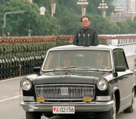

11月14日-巴厘岛中美元首会晤
中美元首会晤是指中华人民共和国主席与美利坚合众国总统之间举行的会晤。
当地时间2022年11月14日下午，国家主席习近平在印度尼西亚巴厘岛同美国总统拜登举行会晤。两国元首就中美关系中的战略性问题以及重大全球和地区问题坦诚深入交换了看法。
基本信息
| 中文名 | 中美元首会晤 | 相关国家 | 中国、美国 |
历次会晤
1985年7月22日至31日，中国国家主席李先念访问美国并与美国总统里根举行会晤，这是中国国家元首首次访美。
1993年11月19日，中国国家主席江泽民在美国西雅图出席亚太经济合作组织领导人非正式会议期间与美国总统克林顿举行会晤。
2002年2月21日，中国国家主席江泽民与访华的美国总统布什在北京人民大会堂举行会晤。
2002年10月25日，中国国家主席江泽民访问美国并与美国总统布什在得克萨斯州克劳福德布什总统私人牧场举行会晤。
2009年11月17日，中国国家主席胡锦涛与访华的美国总统奥巴马在北京人民大会堂举行会晤。
2013年6月7日，中国国家主席习近平与美国总统奥巴马在美国加利福尼亚州安纳伯格庄园举行会晤。
2014年11月12日，中国国家主席习近平与访华的美国总统奥巴马在北京人民大会堂举行会晤。
2017年4月6日，中国国家主席习近平与美国总统特朗普在美国佛罗里达州海湖庄园举行会晤。
2018年12月1日，中国国家主席习近平与美国总统特朗普在阿根廷布宜诺斯艾利斯举行会晤。
2021年11月16日，中国国家主席习近平同美国总统拜登举行视频会晤。
当地时间2022年11月14日下午，国家主席习近平在印度尼西亚巴厘岛同美国总统拜登举行会晤。两国元首就中美关系中的战略性问题以及重大全球和地区问题坦诚深入交换了看法。
11月20日-美国中期选举
美国中期选举，是指在总统任期第二年11月进行的定期选举，每四年一次。美国国会大部分成员都会在中期选举中改选，包括两年任期的众议院的435个全部席位，以及在参议院100个席位里33或34个。
除国会选举，美国部分州还将同时举行州长选举。美国是一个联邦制国家，由50个州和哥伦比亚特区组成。各州州长由选民直接选出，州长任期不一，一般为4年，少数州为2年，1/2的州规定州长任期为一届或两届。按美国法规，中期选举也将改选多名州长
2022年11月20日报道，美国2022年中期选举结果基本明朗。据美国媒体测算和统计，在本次国会换届选举中，共和党从执政的民主党手中夺下众议院控制权，民主党守住参议院多数党地位。
基本信息
| 中文名 | 中期选举 | 选举目的 | 两党五项议题投票 |
| 外文名 | mid-term election | 现状 | 众议院435名，参议院100名 |
| 概述 | 美国两党争夺对国会的控制权 | 议员改选 | 美国参议院议员改选是错开举行 |
选举背景
中期选举的日期大都在当年11月的第一个星期二举行。中期选举的实质是民主党和共和党争夺对国会的控制权。
根据美国1787年宪法，国会是国家的最高立法机构，由参议院和众议院组成。两院议员都由各州选民直接选举产生。参议员每州选2名，50个州共100名，任期6年，每两年改选1/3。众议员按各州人口比例选出，大约50万人选一名，共435名，任期2年，届满后全部改选。国会每两年一届。美国宪法规定，参议员候选人必须年满30周岁，作为美国公民已满9年，且必须是选出州的居民；众议员必须年满25周岁，作为美国公民已满7年，且为选出州的居民。任何文官不得担任国会议员。
美国是一个联邦制国家，由50个州和1个特区组成。各州州长由选民直接选出，一般为4年，少数州为2年，1/2的州规定州长任期为一届或两届。按美国法规，中期选举也将改选多名州长。
议员改选
意义：美国参议院的议员改选是错开举行的。2012年，另外三分之一参议员也将面临改选，时间和美国总统选举定在同一天。最后三分之一的参议员将在2014年的中期选举中进行改选。另外，在参议员改选中，特拉华州、纽约州和西维吉尼亚州有3个议席由于特殊情况空了出来，因此也将面临补选。他们分别是前参议员拜登当选美国副总统、前参议员希拉里被任命为美国国务卿，参议员罗伯特·毕尔德死亡。
立场比较
赤字大战
美国日益庞大的财政赤字成为各方关注的焦点。 共和党在这一问题上主张削减支出，反对加税。赤字战争的可能解决议案包括：削减退休福利、改革联邦资金支持的医保计划及改革税法等。民主党在这一问题上则相对焦灼。分析人士认为，奥巴马不太可能签署很多，甚至是上述任何一份共和党议员的提案成为法律。
减税政策前景
美国前任总统布什实施的减税政策将于2010年底到期，当前国会的任期也将在12月底结束。针对该政策是否应当延续，两党存在意见分歧。 共和党预计将会尝试在2011年初新国会开始工作后恢复这些政策，全面延长减税措施。民主党则希望，仅仅继续针对年收入低于20万美元的个人，或者不足25万美元的家庭实施减税。
医改法案前景
奥巴马政府今年初经过艰难投票通过的医改改革法案成为各方关注的另一大焦点。 共和党可能试图削减拨款，以阻止医改法的全面实施。当初医改法就是在缺乏共和党支持的情况下得到国会通过的。奥巴马则将否决任何想废止医改法案的议案。
华尔街的未来
奥巴马政府推行的金融监管改革，令华尔街面临一场大声势的“浩劫”。两党对华尔街而言，却扮演了正反两面的角色。 共和党希望能够削弱7月份通过的金融改革案，但预计他们竭尽所能最终也不过就是“小打小闹”。分析师认为完全瓦解该法案的可能性几乎为零。不过，他们可能将目光放在一些具体的改革举措上，比如新成立的消费者保护机构的资金来源，他们或许可以在这些更细节的问题上有所作为。
2022年中期选举
2022年11月6日消息，美国11月8日的中期选举进入最后冲刺阶段。民主党籍总统拜登、前总统奥巴马以及共和党籍前总统特朗普在选前最后一个周六（11月5日）均前往关键州宾夕法尼亚州，为其所属党派的参议院候选人站台助选。
2022年11月8日消息，根据洛杉矶选务处的数据，在投票结束前两天，洛杉矶县超过17%的登记选民已经为中期选举投票，绝大多数通过邮寄投票；洛县还有7万多人亲自投票，其中约三分之一是在周日投票的。截至周日晚些时候，超过90万人通过邮寄投票。当地时间11月8日，美国中期选举如期举行，选举结果正在逐渐揭晓，已有几名共和党参议员轻松赢得连任。
2022年11月11日消息，据媒体报道，美国中期选举，“共和党拿下首胜”，30年以来首次在关岛赢了。
当地时间2022年11月16日，美国共和党率先拿到218个众议院席位，成为多数党，锁定众议院控制权。
2022年11月20日报道，美国2022年中期选举结果基本明朗。据美国媒体测算和统计，在本次国会换届选举中，共和党从执政的民主党手中夺下众议院控制权，民主党守住参议院多数党地位，美国再一次迎来“分裂”国会。
11月30日-江泽民同志逝世
江泽民（1926年8月17日-2022年11月30日），男，汉族，江苏省扬州市人。1943年起参加地下党领导的学生运动，1946年4月加入中国共产党，1947年毕业于上海交通大学电机系。曾任中国共产党中央委员会总书记，中国共产党中央军事委员会主席，中华人民共和国主席，中华人民共和国中央军事委员会主席。
江泽民是全党全军全国各族人民公认的享有崇高威望的卓越领导人，伟大的马克思主义者，伟大的无产阶级革命家、政治家、军事家、外交家，久经考验的共产主义战士，中国特色社会主义伟大事业的杰出领导者，党的第三代中央领导集体的核心，“三个代表”重要思想的主要创立者。
2022年11月30日12时13分，江泽民同志在上海逝世，享年96岁。12月11日遵照江泽民同志及其亲属的意愿，敬爱的江泽民同志的骨灰在长江入海口撒入大海。
基本信息
| 中文名 | 江泽民 | 出生日期 | 1926年8月17日 |
| 国籍 | 中国 | 逝世日期 | 2022年11月30日 |
| 民族 | 汉族 | 毕业院校 | 上海交通大学 |
| 籍贯 | 江苏省扬州市 | 政治面貌 | 中共党员 |
人物评价
江泽民同志是我党我军我国各族人民公认的享有崇高威望的卓越领导人，伟大的马克思主义者，伟大的无产阶级革命家、政治家、军事家、外交家，久经考验的共产主义战士，中国特色社会主义伟大事业的杰出领导者，党的第三代中央领导集体的核心，“三个代表”重要思想的主要创立者。
江泽民同志是党的第三代中央领导集体的核心。二十世纪八十年代末九十年代初，国际国内发生严重政治风波，世界社会主义出现严重曲折，我国社会主义事业发展面临空前巨大的困难和压力。在这个决定党和国家前途命运的重大历史关头，江泽民同志带领党的中央领导集体，紧紧依靠全党全军全国各族人民，旗帜鲜明坚持四项基本原则，维护国家独立、尊严、安全、稳定，毫不动摇坚持经济建设这个中心，坚持改革开放，捍卫了中国特色社会主义伟大事业，打开了我国改革开放和社会主义现代化建设新局面。
江泽民同志目光远大、审时度势，总是从中国和世界发展大势、从党和国家工作全局出发观察和思考问题，不断推进理论创新和其他各方面创新。江泽民同志信念坚定、处事果断，总是把党和人民放在心中最高的位置，始终不渝坚持共产党人的理想信念，在关键时刻具有作出果敢决策的非凡胆略和进行理论创新的巨大勇气。江泽民同志尊重实践、与时俱进，总是紧紧把握时代发展脉搏和契机，坚持从党和人民活生生的实践出发总结经验、寻找路子，脚踏实地而又开拓进取推进党和国家各项工作。江泽民同志尊重群众、关心群众，总是高度关注人民群众安危冷暖，依据最广大人民根本利益来检验和推动工作。江泽民同志的优秀品格和高尚风范将永远教育和激励我们前进。
江泽民同志的逝世，对我党我军我国各族人民是不可估量的损失。党中央号召，全党全军全国各族人民化悲痛为力量，继承江泽民同志的遗志，以实际行动表达我们的悼念。
|  |

|